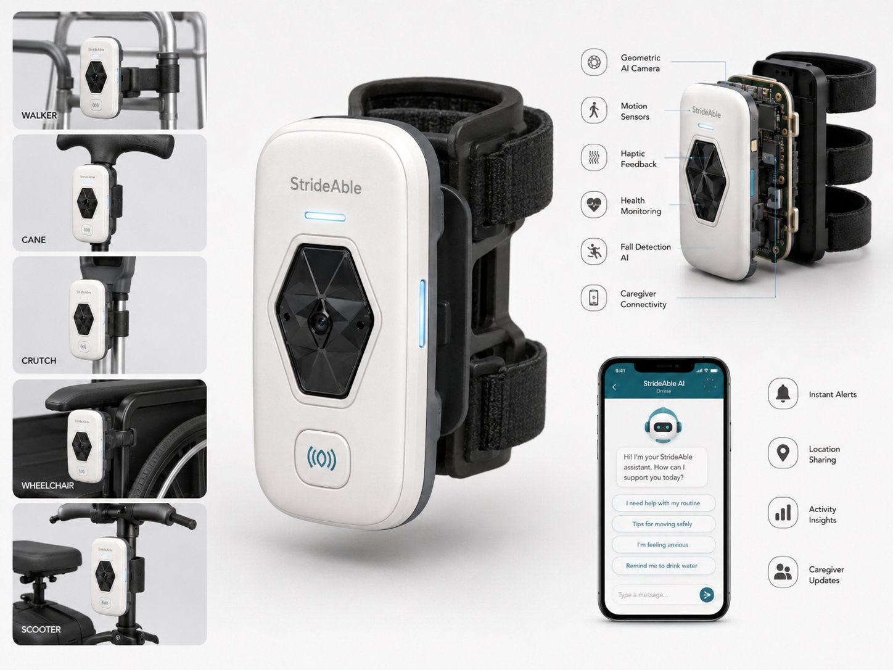

An AI-powered attachment that transforms walkers, canes, crutches, wheelchairs, and scooters into intelligent mobility companions.

Every year, millions of older adults and mobility device users face preventable dangers — not because of their conditions, but because their tools haven't kept up with the times.
Falls are the leading cause of injury-related hospital admissions among older adults. Standard mobility aids offer no active fall prevention or detection.
Curbs, uneven floors, and unexpected hazards are invisible threats. Traditional devices provide no warning until it's too late.
Caregivers and family members have no real-time visibility into a loved one's safety, location, or movement patterns throughout the day.
Vital mobility and health data goes uncaptured. Clinicians and caregivers lack the insights needed to prevent incidents before they happen.
StrideAble is a compact, AI-powered attachment that clips directly onto existing mobility devices — no replacement required. In seconds, a standard walker or cane becomes an intelligent, connected safety system.
The device is mounted facing outward and forward so its geometric AI camera and sensors can continuously scan the path ahead, providing real-time obstacle detection, haptic feedback, fall detection, health monitoring, and seamless caregiver connectivity.
Click or hover any feature to learn more. Mount the device facing outward — the front-facing camera and sensors detect obstacles directly in the user's path.
Front-facing obstacle detection
The hexagonal AI camera mounts forward-facing to continuously scan the path ahead. Using geometric depth analysis, it identifies obstacles, steps, and hazards before the user reaches them — providing split-second warnings.
Activity & movement tracking
High-precision accelerometers and gyroscopes track gait patterns, step frequency, and overall mobility trends. Data is used to detect anomalies, measure recovery progress, and flag concerning changes in movement.
Vibration alerts in hand pads
When an obstacle is detected ahead, the device transmits a gentle vibration through the hand grip pads. Alert intensity scales with proximity — a subtle nudge at 6 feet, a firm pulse at 2 feet — giving the user time to react safely.
Vitals & wellness insights
Continuous monitoring of activity levels, rest periods, and mobility metrics builds a longitudinal health picture. Trends are shared with the caregiver app and can be exported for medical consultations.
Auto-alerts on fall events
Proprietary AI models analyze motion data in real time. When a potential fall is detected, StrideAble immediately notifies connected caregivers via the app, providing time-stamped location data and event details.
Real-time family connectivity
The StrideAble companion app gives caregivers and family members instant visibility into location, activity levels, health insights, and safety alerts — maintaining connection without compromising the user's independence.
Your personal mobility assistant
The onboard AI assistant offers medication reminders, gentle encouragement, answers to health questions, and compassionate check-ins. It learns user preferences over time to provide increasingly personalized support.
Visibility in low-light areas
An integrated LED system activates automatically in low-light environments, illuminating the path ahead and making the user more visible to others. Ideal for evening walks, dimly lit hallways, and nighttime emergencies.
Attach StrideAble to any walker, cane, crutch, wheelchair, or scooter using the universal mounting system. Setup takes under 60 seconds — no tools required.
Orient the device so the front-facing camera and sensors face outward, scanning the path directly ahead. A visual alignment indicator confirms correct positioning.
The hand pad vibrates with proximity-based intensity alerts when obstacles are detected ahead. Intuitive, automatic, and non-intrusive — it works without any effort from the user.
Caregivers receive real-time safety alerts, location sharing, activity insights, and health updates through the StrideAble companion app on their phone.
StrideAble's universal mounting system is designed to clip securely onto virtually any mobility aid — no modifications, no replacements.
Clips to the front crossbar for optimal forward-facing detection
Mounts at handle height with a secure rotational grip
Attaches to the upper arm support or handle shaft
Mounts to the front frame facing the direction of travel
Clips to the tiller or front chassis for full obstacle coverage
The StrideAble app keeps caregivers, family members, and healthcare providers connected to the people they care about — without being intrusive or undermining independence.
Immediate push notifications for fall detection, low battery, or device issues.
Real-time GPS location visible to approved family members and caregivers.
Daily movement summaries, trend analysis, and mobility health scores.
Scheduled check-in reports sent directly to your care team.
Monitor chatbot interactions and set reminders for your loved one.
Possible fall detected. Checking user status...
StrideAble combines direct-to-consumer sales with B2B institutional partnerships for diversified, recurring revenue.
Direct purchase of the StrideAble device through our website, retail partners, and healthcare suppliers.
Monthly or annual subscription for advanced caregiver analytics, extended data history, and premium AI insights.
Unlockable AI companion upgrades including personalized coaching, advanced health analytics, and custom reminders.
B2B agreements with hospitals, clinics, and home health agencies for bulk device deployment and integration.
Facility-wide licensing for assisted living communities, memory care centers, and retirement villages.
Partnerships with physical and occupational therapy centers to integrate StrideAble into recovery programs.
Join us in building the future of intelligent mobility. Whether you're an investor, healthcare partner, or passionate about accessibility — we want to hear from you.
Join the Future of MobilityOr reach us directly: contact@strideable.com